Ford Explorer ST 4x4 2022 | USA Spec | Licytacja w tym tygodniu
Przedstawiamy Forda Explorera ST 4x4 z 2022 roku, który będzie licytowany w USA jeszcze w tym tygodniu.
Dlaczego warto postawić właśnie na ten egzemplarz:
- Topowa, sportowa wersja ST
- Mocny silnik 3.0 EcoBoost V6 o mocy 400 KM współpracujący z automatyczną skrzynią biegów
- Napęd 4x4 zapewniający świetną trakcję i osiągi
- Niski przebieg 61 149 mil (ok. 98 tys. km)
- Samochód posiada status Run & Drive – odpala i porusza się o własnych siłach
- Egzemplarz dostępny do zakupu na aukcji w USA jeszcze w tym tygodniu
Co warto wiedzieć:
- Widoczne uszkodzenie lewego boku pojazdu
- Dodatkowo zaznaczone drobne zarysowania i wgniecenia
- Wnętrze prezentuje się bardzo dobrze i nie nosi większych śladów użytkowania
- Samochód wyposażony w trzy rzędy siedzeń
- Przed zakupem wykonujemy pełną analizę historii pojazdu oraz zakresu uszkodzeń
Stan:
- Run & Drive – odpala i jeździ
- Mechanicznie samochód uruchamia się bez problemu
- Wnętrze zachowane w bardzo dobrym stanie
- Uszkodzenia skoncentrowane po lewej stronie nadwozia
- Egzemplarz do pełnej weryfikacji historii przed zakupem
Lokalizacja: USA
Analiza historii pojazdu dostępna – przebieg, właściciele, historia szkód oraz pełna kalkulacja importu.
Szacowany zysk Pod Dom względem rynku PL: przygotowujemy indywidualną kalkulację z pełnym rozbiciem wszystkich kosztów importu.
Zadzwoń:
Przygotujemy pełną kalkulację przed zakupem. Żadnych ukrytych kosztów po fakcie.
Wybrane oferty z Ameryki, Dubaju oraz Europy publikowane są w zamkniętych grupach na WhatsApp AutoStany. Wejdź do grup i obserwuj, aby być na bieżąco.
Grupa Ameryka
https://whatsapp.com/channel/0029Vb7ggYbCRs1nGUnDna13
Grupa Zjednoczone Emiraty Arabskie (Dubaj)
https://whatsapp.com/channel/0029VbBj429JP2127CJwkg1D
Grupa Klasyki
https://whatsapp.com/channel/0029Vb7dnC4BFLgXTc7SpS20
Grupy mają charakter selektywny. Dostęp przyznawany jest etapami.
496 opinii na 4 platformach (4,8) · 2200+ sprowadzonych aut
https://autostany.pl/o-nas
Od wyboru auta po rejestrację w Polsce – w 4 krokach, bez niespodzianek.
Szczegóły procesu importu: https://autostany.pl/wiedza/import-auta-z-usa-krok-po-kroku
Tel.: AutoStany · ul. Chorągwi Pancernej 55, Warszawa Pn–Pt 8:00–20:00 · www.autostany.pl
Ogłoszenie ma charakter informacyjny i nie stanowi oferty handlowej w rozumieniu art. 66 §1 KC.
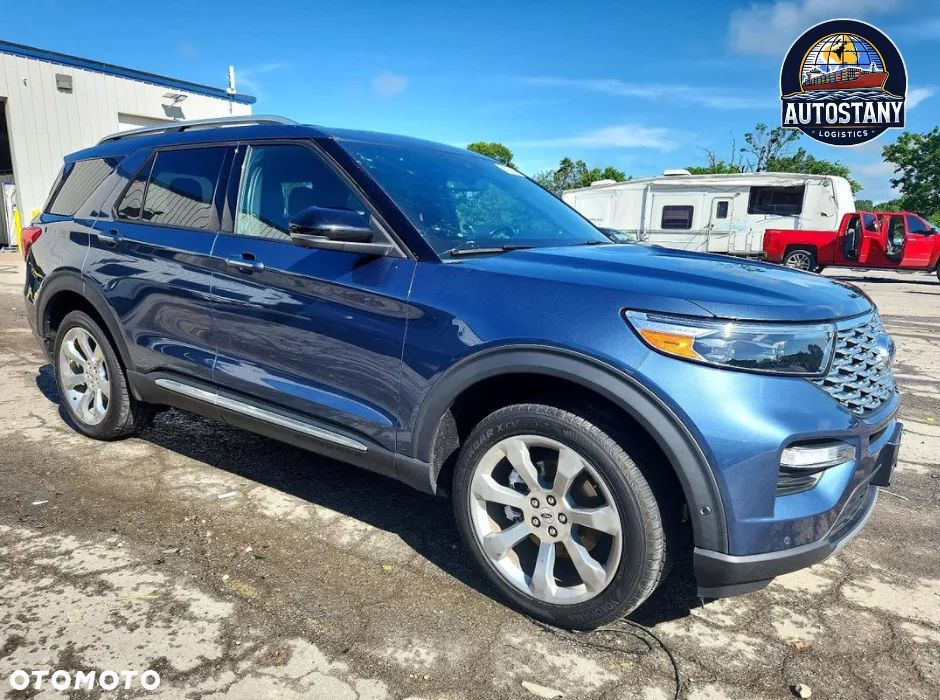
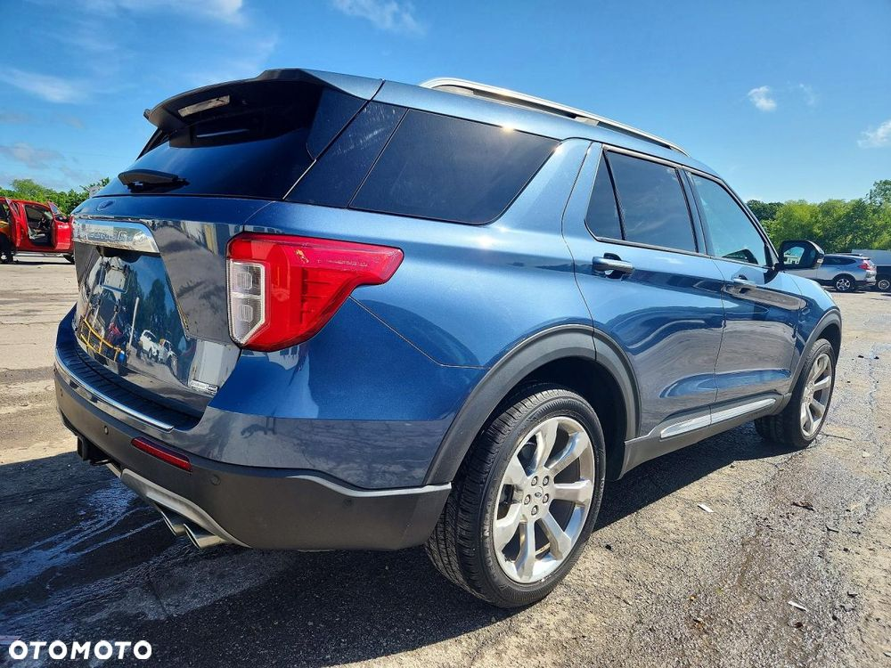
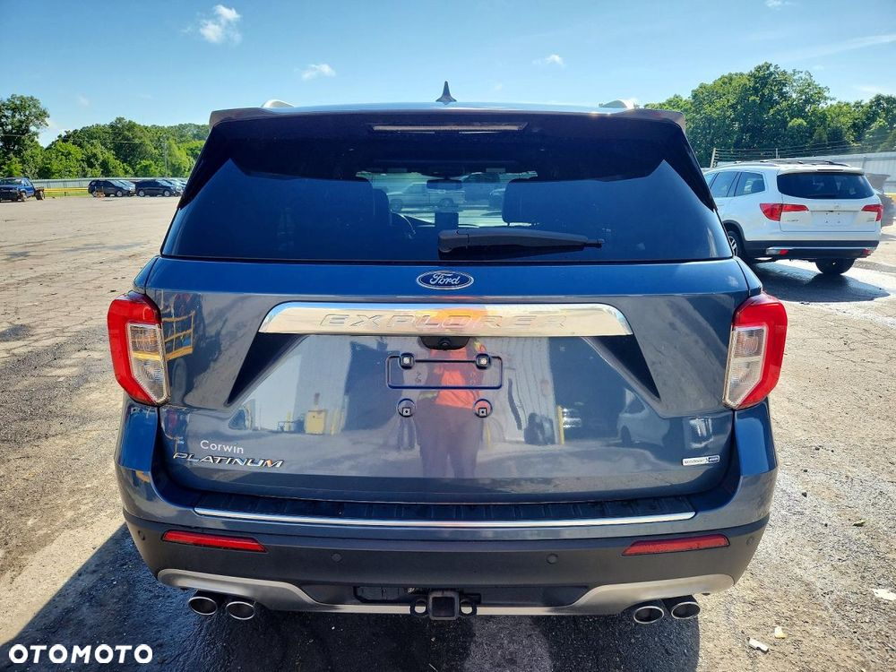
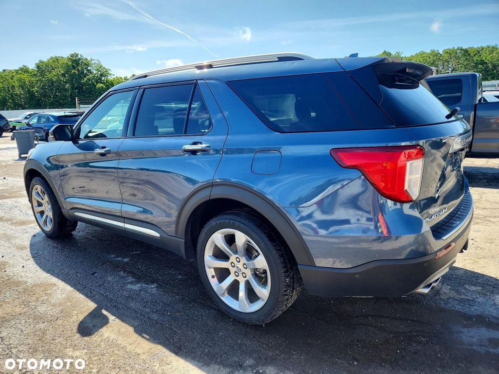
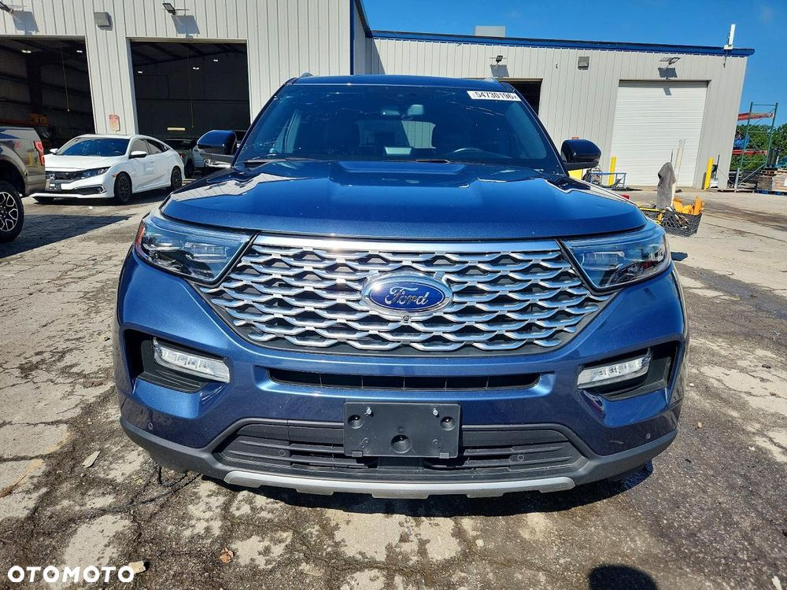
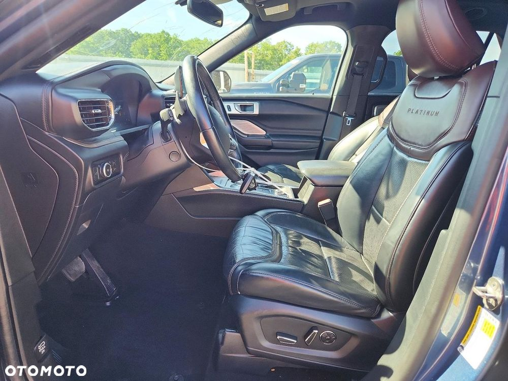
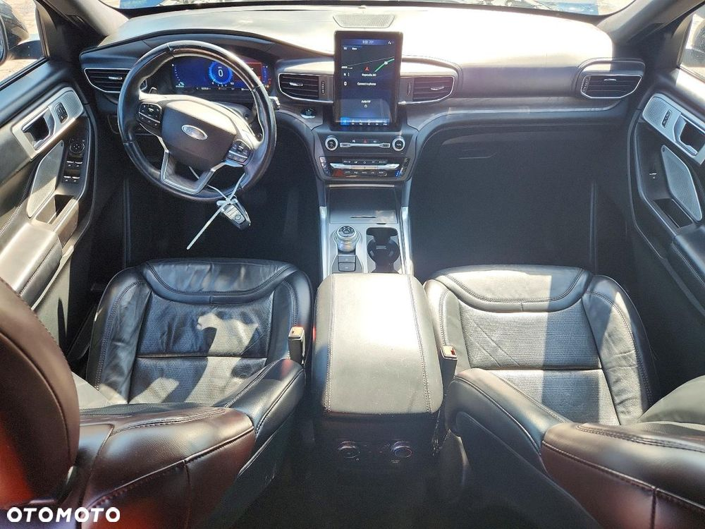
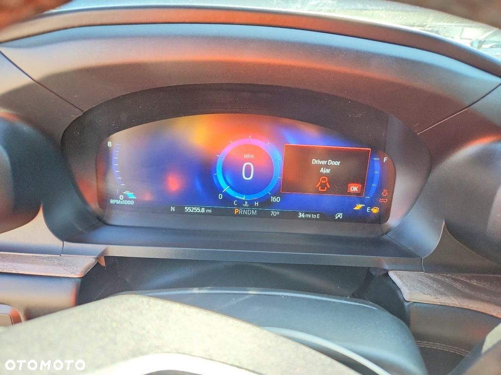
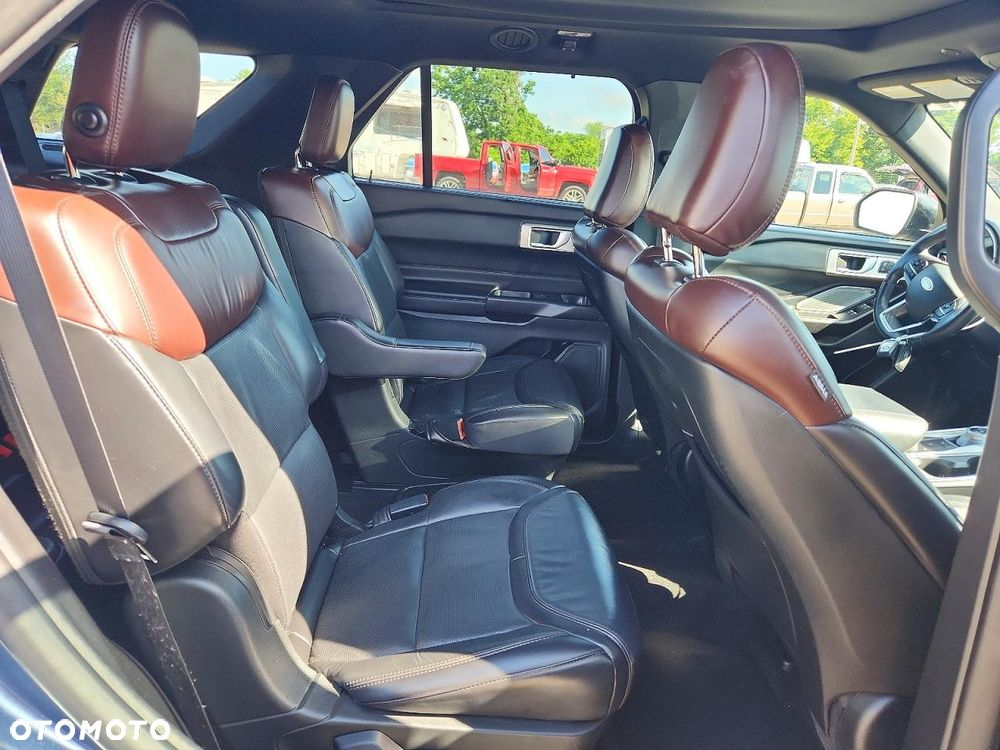
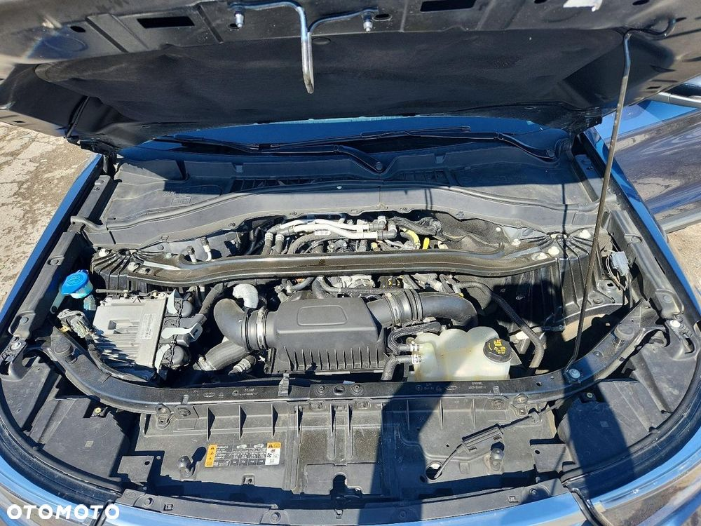
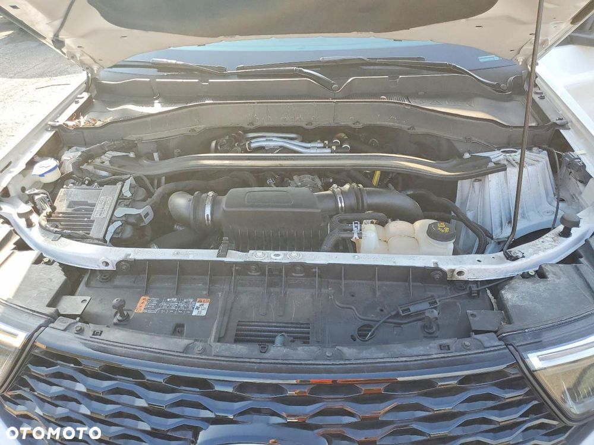